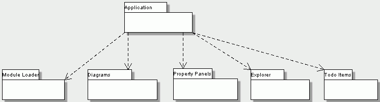

A top level subsystem is the subsystem that contains the Main.main(), i.e. the starting point of the ArgoUML application. It initialises other subsystems, and hence depends on other ArgoUML subsystems, but no other ArgoUML subsystem depends on the top level.
Application - see <<Subsystem>> Application.
